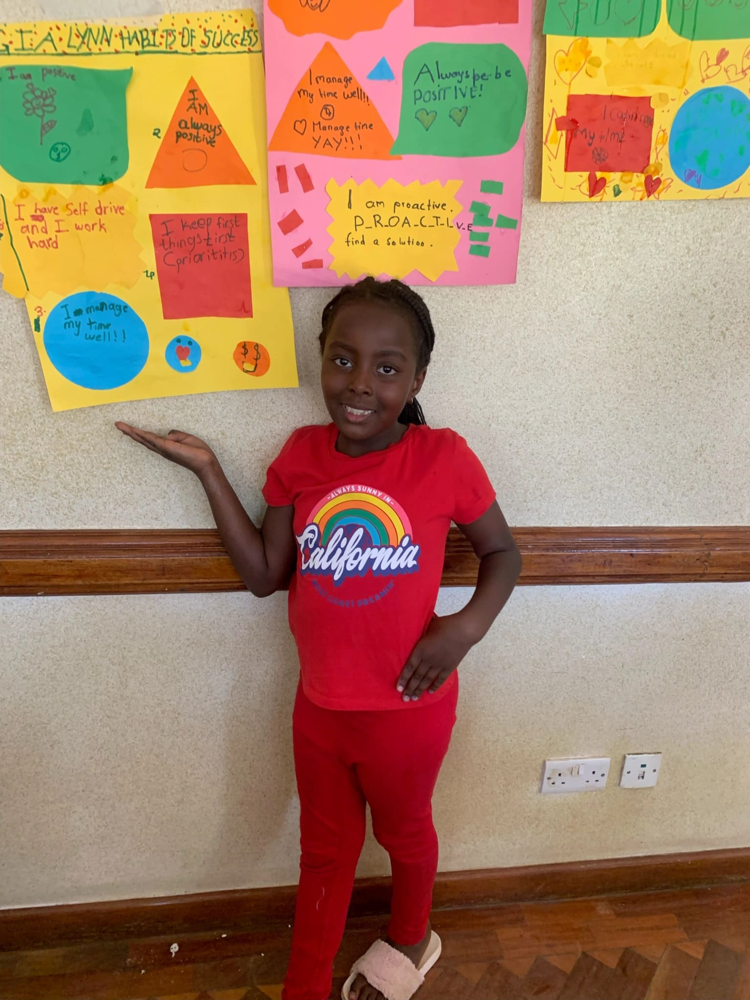

Hello there our Amazing readers and happy new month to you.
We have finished our first series of goal settings and it is important to take stock of what we have done so far. Thank you very much for joining us in this journey.
We started of the year by setting our goals. We were reminded that our goals need to be SMART .Specific ,Measurable , Achievable, Realistic and Time bound. Some of our goals included; To pass our exams, To travel with our families and to save more money. The word of God reminded us in Habakkuk 22:2 ” Write the vision down clearly on tablets so that anyone can read it at a glance”. It is important to write down your goals and dreams to show you the possibility of achieving them. I hope you also enjoyed the story on Mzee Baraza who managed to achieve his goal of going to school at even at an old age.
Dear Reader I hope that we motivated you to also create a vision board for this year. Doing the activity together with our friends at the amazing kids club made it so much fun and also was a moment of inspiration and sharing. We hang our vision board in our rooms so that it could be the first thing we see every morning when we wake up. This will help us stay aligned and focused on our goals.
It was important for us to equip ourselves with necessary tools to enable us achieve our goals. One of this tools is building good habits. A habit is a regular tendency or practice that is hard to give up. We challenged ourselves to build the following habits: Proactive that is taking initiative and action to create the life we want. Having a Positive Attitude in all that we do. Prioritizing our tasks and be objective . Effective time Management through planning ahead and setting deadlines and finally we shall be Self driven and hardworking people willing to do the work in order to reach our goals.
The other most important tool that we need to achieve our goal is confidence. Confidence is belief in ones self. Some of our goals are big and intimidating and fear could paralyze us from going after our dreams, therefore it is important to build our confidence. God reminds us in Joshua 1:9 that “Be strong and courageous .Do not be afraid; do not be discouraged, for the Lord your God will be with you wherever you go”. God our father is with us even as we pursue our goals, He is with us every step of the way and that is enough to build our confidence.
It has been an awesome season. We have learned so much, made friends and grown creatively. We are happy to always share with you and hope that you will also join us at amazing kids club.